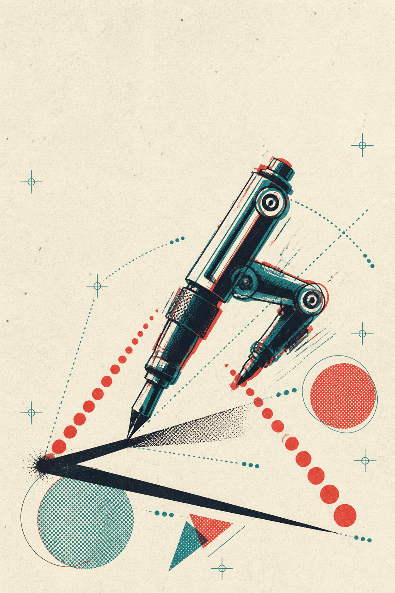

점수
0000
목숨
●●●
박자
72
♬
겨냥도에서 보이는 모서리는 실선으로, 보이지 않는 모서리는 점선으로 나타내 보세요.
1
2
3
4
1번 모서리를 완성해 보세요

♬
찍
고
그
어
숨은 선은 세 박자
인쇄기 돌리기!
어떻게 놀아요? 〉
5학년 2학기 · 직육면체와 정육면체
1 / 3 · 사용 설명
한 번 이어 그어요
보이는 모서리
는 한쪽 끝에서 다른 끝까지 한 번에 이어 그어 보세요.
다음
오늘의 인쇄 기록
인쇄기 정지
0
다시 인쇄하면 더 정확해져요.
다시 인쇄하기